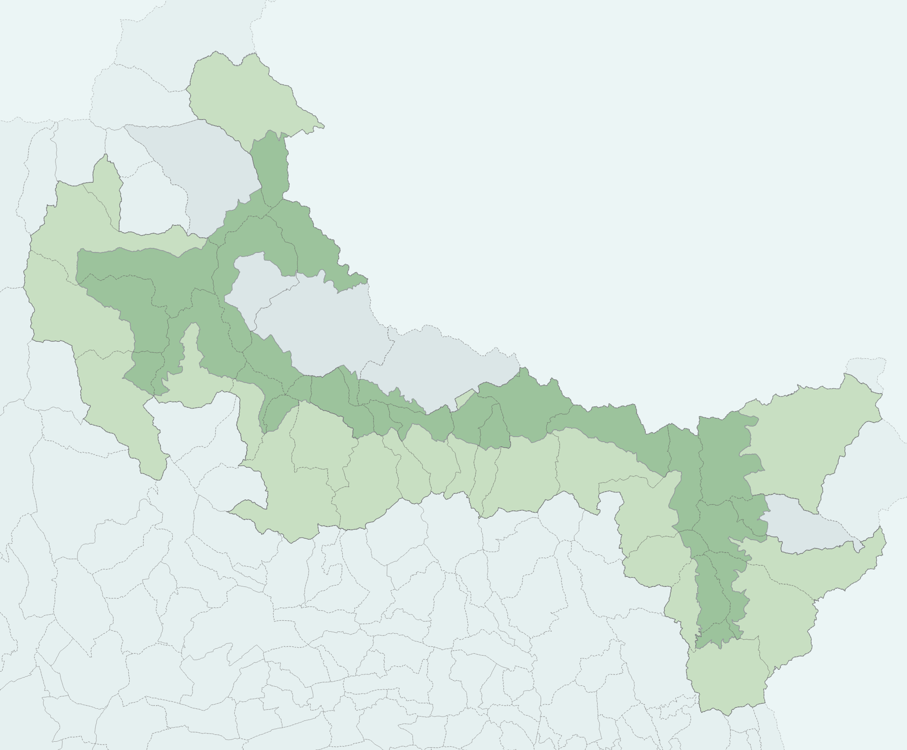

limites
Description
Le schema limites donne accès aux données géographiques réglementaires du Parc national du Mercantour
et des entités administratives remarquables aux alentours:
- les différentes zones du PNM
- la liste des communes de l'aire optimale d'adhésion
- la répartition géographique des services territoriaux
NB: Les limites doivent être revues. Elles peuvent être utilisées à fin illustratives, mais leurs localisations précises sont en cours de révision. Si des statistiques précises concernant les superficies de communes en coeur de parc, se référer au document spécifiquement produites pour le calcul de "X:\6.7 SYSTEME INFORMATION\6OUTILS_MEMO\STATS-CHIFFRES CLES"_
Les limites du parc
Les parcs nationaux sont divisés en plusieurs zones, encadrés par des réglementation plus ou moins strictes. Vous trouverez ci-dessous les définitions des principales zones ainsi que leur illustration:
Aire d’adhésion
Espace de cohérence et de solidarité écologique avec le cœur du parc constitué des territoires des communes de l’aire optimale d’adhésion ayant adhéré à la charte. Aussi complétée par l’aire maritime adjacente pour certains parcs nationaux.
Aire optimale d’adhésion
Espace comprenant l’ensemble des communes ayant vocation à adhérer à la charte du parc national au sein duquel les activités humaines pouvant s’y exercer sont réglementées en cohérence avec les objectifs de gestion du parc décrits dans la charte.
Cœur de parc national
Territoire d’un parc national, terrestre ou marin, soumis à une réglementation particulière stricte encadrant certaines activités, afin de s’assurer de leur compatibilité avec la préservation du patrimoine naturel, culturel et paysager.
Périmètre d’étude de la charte
Territoire d’ensemble d’un parc national comprenant le cœur et l’aire optimale d’adhésion.
Territoire de parc national
Territoire composé du cœur et de l’aire d’adhésion d’un parc national.
Définitions trouvables sur ce site
Dans le cas du Parc National du Mercantour voilà une illustration des différents territoires (les zones colorées correspondent à chaque délimitation)
| Délimitation | Surface(km²) | Carte |
|---|---|---|
| Aire d'Adhésion | 1211,7 | |
| Zone Coeur | 679,1 | |
| Aire Optimale d'Adhésion | 1485 | |
| Périmètre d’étude de la charte | 2164,1 | |
| Territoire de parc national | 1890,8 |  |
Calcul des aires dans le parc
Données par communes
| code INSEE | Nom commune | Adhésion Charte (1=oui) | Zone coeur (km²) | Aire Optimale d’Adhésion (km²) | Aire d’Adhésion (km²) | Surface Totale de la commune | % de ZC | % en AOA |
|---|---|---|---|---|---|---|---|---|
| 04006 | Allos | 1 | 41,8 | 75,4 | 75,4 | 117,2 | 35,7 | 64,3 |
| 04019 | Barcelonnette | 1 | 0,0 | 16,6 | 16,6 | 16,6 | 0,0 | 100,0 |
| 06013 | Belvédère | 1 | 31,0 | 44,3 | 44,3 | 75,3 | 41,1 | 58,9 |
| 06016 | Beuil | 1 | 24,2 | 50,3 | 50,3 | 74,5 | 32,5 | 67,5 |
| 06020 | Bollene Vésubie | 1 | 5,6 | 29,8 | 29,8 | 35,3 | 15,7 | 84,3 |
| 06023 | Breil sur Roya | 1 | 17,6 | 64,3 | 64,3 | 81,9 | 21,4 | 78,6 |
| 06040 | Chateauneuf d'Entraunes | 1 | 10,9 | 18,6 | 18,6 | 29,5 | 37,0 | 63,0 |
| 04061 | Colmars | 1 | 11,9 | 69,8 | 69,8 | 81,7 | 14,5 | 85,5 |
| 06056 | Entraunes | 1 | 48,5 | 31,5 | 31,5 | 80,0 | 60,6 | 39,4 |
| 06062 | Fontan | 0 | 11,3 | 38,2 | 0 | 49,5 | 22,9 | 77,1 |
| 06071 | Guillaumes | 1 | 8,2 | 78,2 | 78,2 | 86,5 | 9,5 | 90,5 |
| 06073 | Isola | 1 | 10,6 | 89,0 | 89,0 | 99,6 | 10,6 | 89,4 |
| 04096 | Jausiers | 0 | 13,4 | 94,9 | 0 | 108,3 | 12,3 | 87,7 |
| 06086 | Moulinet | 1 | 19,6 | 21,4 | 21,4 | 41,0 | 47,7 | 52,3 |
| 06094 | Péone | 1 | 5,5 | 43,0 | 43,0 | 48,4 | 11,3 | 88,7 |
| 06102 | Rimplas | 1 | 10,6 | 14,2 | 14,2 | 24,8 | 42,8 | 57,2 |
| 06110 | Roubion | 1 | 7,6 | 19,4 | 19,4 | 27,0 | 28,2 | 71,8 |
| 06111 | Roure | 1 | 16,1 | 23,6 | 26,6 | 39,7 | 40,5 | 59,5 |
| 06119 | St Dalmas selvage | 0 | 48,8 | 32,1 | 0 | 81,0 | 60,3 | 39,7 |
| 06120 | St Etienne Tinée | 0 | 64,7 | 108,0 | 0 | 172,7 | 37,4 | 62,6 |
| 06127 | St Martin Vésubie | 1 | 45,5 | 52,1 | 52,1 | 97,6 | 46,6 | 53,4 |
| 06129 | St Sauveur Tinée | 1 | 16,0 | 16,2 | 16,2 | 32,2 | 49,7 | 50,3 |
| 06132 | Saorge | 1 | 25,5 | 59,1 | 59,1 | 84,6 | 30,1 | 69,9 |
| 06136 | Sospel | 1 | 7,1 | 55,2 | 55,2 | 62,3 | 11,4 | 88,6 |
| 06163 | Tende | 1 | 50,3 | 127,0 | 127,0 | 177,2 | 28,4 | 71,6 |
| 04226 | Uvernet Fours | 1 | 62,2 | 73,5 | 73,5 | 135,7 | 45,8 | 54,2 |
| 04120 | Val d’Oronaye | 1 | 23,4 | 87,5 | 87,5 | 110,9 | 21,1 | 78,9 |
| 06153 | Valdeblore | 1 | 41,4 | 51,6 | 51,6 | 93,0 | 44,5 | 55,5 |
| TOTAL | - | 679,1 | 1485 | 1890,8 (=Territoire du parc) | 2164,1 ( = Périmètre d'étude de la charte) | - | - |
NB: La surface en Aire d'Adhésion est égale à la surface en Aire Optimale d'Adhésion quand la commune adhère à la charte, sinon elle est égale à 0. La surface totale de l'Aire d'adhésion du parc est de 1211,7.
Méthode de calcul
Les données utilisées pour le calcul des aires par commune et pour l'ensemble du parc sont:
- Admin Express (dans l'édition de mars 2024)
- les limites du parc telles qu'elles ont été déposées sur le site de l'inpn
Les calculs d'aires ont été réalisées sur PostgreSQL, en utilisant la fonction "ST_AREA" appliquée à une géographie.
Tables remarquables
Les tables suivantes peuvent être chargées directement dans QGIS. Un style par défaut leur est associé.
- .area : Contient l'essentiel des géométrie d'intérêt. Leur filtrage est nécessaire car ces géométries peuvent être superposées.
- .area_type : Table de correspondance entre les identifiants d'area (area.id_type), un type et une description explicite.
- .limites : Contient les limites des zones d'intérêt du parc (coeur, aire d'adhésion....)
- .communes : Communes du parc
- .maille500m : Maillage à 500m de côté couvrant l'emprise du parc et des environs
- .maille1k : Maillage à 1km de côté couvrant l'emprise du parc et des environs
- .maille10k : Maillage à 10km de côté couvrant l'emprise du parc et des environs
Description détaillée des tables
Les tableaux suivants décrivent les principales tables du schéma, et certaines de leur variables. Sauf précision, il s'agit de tables.
.area
Objets géographiques remarquables du PNM (zones réglementaires, communes, vallées ...)
| Nom de la colonne | Type | Description |
|---|---|---|
| id | (PK) int | ... |
| id_type | int | numéro de correspondance avec la table area.type |
| name | string | nom de l'objet |
| description | string | ... |
| geom | geometry (multipolygon) | ... |
.area_type
Table de correspondance pour les objets géographiques remarquables.
| Nom de la colonne | Type | Description |
|---|---|---|
| id | (PK) int | ... |
| type | int | numéro d'identifiant de type d'objet géographique - fait la correspondance avec id_type de limites.area |
| description | string | ... |
.communes
Contient 28 entités.
| Nom de la colonne | Type | Description |
|---|---|---|
| id | (PK) int | ... |
| nom | string | nom de la commune |
| code_insee | int | ... |
| canton/depart/ arrondisst/region | str | nom de l'entité géographique |
| popul | int | population au dernier recensement |
| addhesion | string | deux valeurs: "oui", "non", concernant l'adhésion à la charte du PNM |
.grid (Vue)
Vue de synthèse donnant pour chaque maille de limites.maille1k la surface appartenant à chaque zone, et le nom de la vallée principale.
limites.grid1k_area
Ne contient que les polygones qui sont dans le parc
Intersections des mailles 1000 et des polygones remarquables du PNM (table area), c'est-à-dire qu'il contient des mailles fragmentées selon les zones qui les recouvrent.
| Nom de la colonne | Type | Description |
|---|---|---|
| id_grid | (PK) int | ... |
| id_area | (PK) int | ... |
| surface | string | nom de la commune |
| geom | geometry | ... |
limites.limites
Contient 6 entités: coeur, aire d'adhésion.....
| Nom de la colonne | Type | Description |
|---|---|---|
| id | (PK) int | ... |
| nom | string | nom de la zone (coeur, aire d'adhésion...) |
| description | string | Détail sur le nom |
| geom | geometry | nom de la zone (coeur, aire d'adhésion...) |
| geom_simple | geometry | geométrie simplifiée |
limites.maille1k
Maillage de 1km de côté pavage normalisé
| Nom de la colonne | Type | Description |
|---|---|---|
| id | (PK) int | ... |
| id_sig | string | ... |
| code_10km | string | numéro identifiant la maille dans un carré de 10 km |
| aire_* | boolean | indication (True/False) si la maille est dans une zone d'intérêt |
limites.maille500m
Maillage de 500m de côté
| Nom de la colonne | Type | Description |
|---|---|---|
| id | (PK) int | ... |
| position | string | position de la maille 500m dans la maille 1km qui la contient (NE, NO, SE, SW) |
| id_parent | int | id de la maille 1km parente |
Projets QGIS
Pas de projet connu.
Dépendances
Pas de dépendance connue.
Documentation pour utilisateurs avancés et maintenance
Utilisation du schema limites dans les projets SQL et QGIS
Log Interne
Les objets géographiques remarquables du PNM (limites du parc, limites des communes du parc, services territoriaux, mailles 1km du territoire, etc) sont souvent utilisées dans les projets SQL et QGIS, ce qui nécessite l'optimisation des opérations de calcul les plus fréquentes (intersection, ...) par leur mise en cache.
Les traitements géométriques (intersections, inclusions) sont plus rapides lorsqu'il s'appliquent à des objets d'emprise réduite. On a donc découpé tous les objets géométriques remarquables suivant les mailles 1km et mis en cache la géométrie et la surface de l'intersection avec pour effet :
- l'identification immédiate des mailles 1km liées à chaque géométrie remarquable
- l'accélération des calculs de surface commune entre un objet géographique remarquable et une géométrie arbitraire.
fonction limites.get_id_type
Retourne l'identifiant correspondant à un type. Par exemple:
retourne l'identifiant de type des services territoriaux.fonction limites.get_id_area
Retourne l'identifiant d'un objet géographique remarquable à partir de son type et de son nom. Par exemple
retourne l'identifiant de l'objetcoeur de type limites.
Exemples d'utilisation de la table grid1k_area
La table peut être utilisée directement ou en conjonction avec les mailles 1000 pour déterminer les relations géométriques entre une géométrie arbitraire et l'un des multipolygones.
Exemple: Pour retrouver la surface coeur de chaque commune
select
round(sum(case
when gcoeur.surface = 1000000 then gcom.surface
when gcom.surface = 1000000 then gcoeur.surface
else st_area(st_intersection(gcoeur.geom, gcom.geom))
end)) "surface coeur",
name commune
from
limites.grid1k_area gcom
join limites.area on
gcom.id_area = area.id
join (
select
*
from
limites.grid1k_area
where
id_area = limites.get_id_area('limites',
'coeur'))gcoeur
using (id_grid)
where
area.id_type = limites.get_id_type('communes')
group by
area.name
order by
area.name;
Pour retrouver la Surface du ST Haut Var Cians en coeur de parc
-- méthode grid
select round(sum(
case
when a.surface = 1000000 then b.surface
when b.surface = 1000000 then a.surface
else st_area(st_intersection(a.geom, b.geom))
end
))
from limites.grid1k_area a
join limites.grid1k_area b on a.id_grid = b.id_grid
where a.id_area = limites.get_id_area('limites','coeur')
and b.id_area = limites.get_id_area('st', 'Haut Var Cians');
-- méthode classique
select round(st_area(st_intersection(a.geom, b.geom)))
from limites.area a,
limites.area b
where a.id = limites.get_id_area('limites','coeur')
and b.id = limites.get_id_area('st', 'Haut Var Cians');
Intersection du ST Haut Var Cians et du coeur de parc
-- méthode grid
select st_union(
case
when a.surface = 1000000 then b.geom
when b.surface = 1000000 then a.geom
else st_intersection(a.geom, b.geom)
end
)
from limites.grid1k_area a
join limites.grid1k_area b on a.id_grid = b.id_grid
where a.id_area = limites.get_id_area('limites','coeur')
and b.id_area = limites.get_id_area('st', 'Haut Var Cians');
-- methode classique
select st_intersection(a.geom, b.geom)
from limites.area a,
limites.area b
where a.id = limites.get_id_area('limites','coeur')
and b.id = limites.get_id_area('st', 'Haut Var Cians');
Mise à jour des données
Exemple de mise à jour manuelle de la table grid1k_area pour les communes :
with c as (select a.id from limites.area a where id_type = 4)
delete from limites.grid1k_area gka using c where c.id = gka.id_area
with i as (
select a.id id_grid,
b.id id_area,
st_intersection(a.geom, b.geom) geom
from limites.maille1k a
join limites.area b on st_intersects(a.geom, b.geom)
where b.id_type=4
)
insert into limites.grid1k_area(id_grid, id_area, surface, geom)
select id_grid,
id_area,
st_area(geom) surface,
st_multi(geom)
from i
where st_area(geom) > 0;